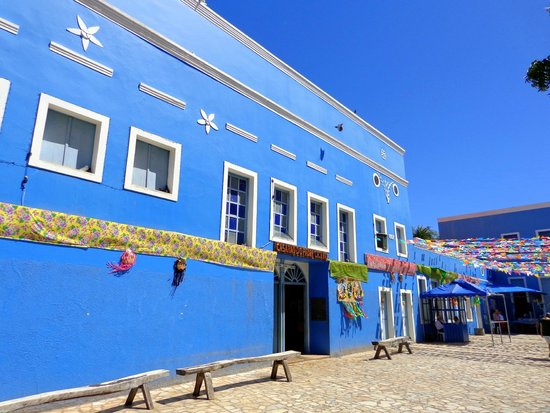

Museu do Horto

Museu do Horto
O vento passava entre as árvores como se carregasse segredos antigos, sussurrando histórias que ninguém mais lembrava. No meio do campo, uma caixa azul — que não deveria estar ali — brilhava discretamente sob a luz do fim da tarde. Ninguém sabia quem a havia deixado, mas todos que passavam sentiam uma estranha vontade de abri-la. Dentro, diziam, havia algo que mudava de forma a cada novo olhar, como se estivesse vivo, ou talvez apenas tentando entender quem o observava. Assim, a caixa permanecia ali, silenciosa, esperando o próximo curioso e respirando um mistério suave que nunca parecia terminar.